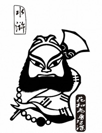

鲁智深坐化浙江潮

梁山大军剿毕江南方腊，宋江屯兵于杭州六和寺安歇。某夜夜分，鲁智深正酣睡在僧房，忽被房外雷鸣之声惊醒，只以为战鼓又响，贼人生发，遂摸了禅杖，提了戒刀，大喝着抢出门来，才知是钱塘江潮之声。便捉一小僧来问，答说：钱塘江潮，日夜两番，今是八月十五，合当子时来潮，因不违时刻，故谓之潮信。鲁智深听罢大悟，合掌作礼，笑道：智真长老曾遗偈言：逢夏而擒，遇腊而执，听潮而圆，见信而寂。今既闻此潮信，必当圆寂。说罢沐浴，换了身僧服，写了篇颂子，焚起一炉好香，又捉了把禅椅，双腿交叠而坐，自然天性腾空。再看那颂子何言，曰：平生不修善果，只爱杀人放火，忽地顿开金枷，这里扯断玉锁，咦，钱塘江上潮信来，今日方知我是我。
鲁智深的死法叫做坐化，坐化是一种佛家用语，谓修行有素之人，端然安坐而终。鲁智深非但不是修行有素之人，相反，他是个不忌荤酒，但有便吃，清规戒律，一概不管的花和尚。在佛家眼中，他虽然称不上十恶不赦，但至少也是罪业非轻。但是就是这么一个又花又野的和尚，选择了一种佛家无比崇尚的方式死亡。按理来说，这样的对比会自然生出一种强烈的反差，但这种反差并没有让人觉得难以接受，相反，竟带给人一种因顿悟而了却，因了却而超脱，因超脱而写意的感动，好似灵光一点，污泥逐渐褪去，莲花缓缓绽开。
感动是指因受外界事物影响而引起的心理上的共鸣，而这种心理上的共鸣又基于对外界事物很大程度上的肯定。肯定在表象上是指对行为的认可，继而推进到对行为主导者在性格与观念上的认可，最后上升为对人物本身的认可。对于鲁智深而言，我们所认可的是他初斗九纹龙时的豪爽豁达，是他拳打镇关西时的嫉恶如仇，是他倒拔垂杨柳时的勇猛刚烈，是他大闹野猪林时的仗义肝胆。这些认可足以让我们陷入对鲁智深的喜爱，但如果仅仅只有喜爱，最多也只能让我们为他的死去而悲惋，并不足以触发那种震颤内心的感动。所以，这种感动一定还有更加深层次的原因。
在《水浒》中，与鲁智深感情最好的要属史进和林冲。史进虽然是开篇的第一个英雄，但故事却不多，所以按下不说。林冲落草前是东京的禁军教头，虽说宋朝重文轻武，但这个官衔也足以让林冲家门富庶。在林冲家中，有一个老丈，一个丫鬟，还有一个貌美的妻子，妻子在送别林冲时被描写为“荆山玉损，可惜数十年结发成亲，宝鉴花残，枉费九十日东君匹配”，可见他们感情极深。所以，无论林冲在刺配之后受尽多少屈辱，他都是忍气吞声的活着，即便他一杆长枪能挑尽天下英雄。为的是心中那个一直难以割舍的念想，有朝一日能赎回清白身，与妻子重聚，再建一个安稳的家。再说鲁智深，在他出世之时，他娘便死了，书中虽然没有交代他的父亲，但他应该是个孤儿，至少也是个单亲孤儿。成人之后，鲁智深虽然在陕西渭州经略府做了提辖，但他与经略相公的关系非常一般，所以在打死镇关西之后，鲁智深没有求助于经略相公便携罪潜逃了，书上说他是“失群的孤雁，趁月明独自贴天飞”，其孤独状可见一斑。而就连因得他救助而认其做义兄的金翠莲和他的授业恩师智真长老也因他大闹五台山早早离开山门而没得到很长的感情积累。所以，与林冲相比，鲁智深要显得无牵无挂得太多。
或许正是这种无牵无挂，让他能由着自己的性子直率的活着（再加上自己已然是个逃犯，便可抛开法令的约束），以自己的是非观去评判善恶，用手中的禅杖来打抱不平。也是这种无牵无挂，让他能在广阔的江湖间浪迹游走打火安身，因为无处是家便可到处是家，因为无人理会便可不去理会别人。还是这种无牵无挂，让他能毫不执着于生死，让他能在迎接死亡时显示出那种因顿悟而了却，因了却而超脱的写意。
但是，鲁智深心中又何曾有过怎样的对生死问题的大体会与大参悟？他虽是个和尚，但他不守佛规，不念佛经，不修佛法，所以理论上他不会有对生死的大参悟，而他的天生神力，手中持握的一把六十二斤的水磨禅杖甚至都没有让他在恶斗与厮杀中真正地体会过死亡的威胁。所以，与其说鲁智深顿悟生死不执着于生死，不如说他心中毫无生死观念。而这种毫无生死的观念比顿悟生死，不执着于生死，或者看轻生死，无惧生死则更进一层。这和《神雕》最后一回里周伯通在华山之巅推选五绝之首时天真烂漫，胸中无半点争雄扬名之心的表现极为类似。在那一回中，周伯通兴致勃勃地接二连三地推选了杨过、小龙女、瑛姑和黄蓉，却唯独没有想到在武力上恐怕连黄老邪、一灯和郭靖都要逊其三分的自己。所以，黄药师才不无叹服地说我黄老邪淡泊名利，一灯大师更视名利为虚幻，而唯你周伯通一人，却是胸中空空荡荡，根本不存名利之念，故高出众人一筹。对于鲁智深而言，恐怕也只有这种毫无生死观念的心才能让他在仅仅听到一波潮声，想起四句偈言的情形下坐化而终。或许这就是佛家哲学的关键要义，是佛家智慧的最高升华，这要义与升华便是佛家口中常言的空。因空见性，灵光一点，性中自见大光明，就如那颂子所言”钱塘江上潮信来，今日方知我是我“。想必，这也是智真长老给智深赐名的原因。
而那性中最后点亮的大光明是什么？鲁智深最后留下的那句”今日方知我是我“说的又是什么？我想鲁智深所指的是他看到了自己最后的归宿。这归宿在《水浒》开篇时便暗暗的预示了。梁山水泊有一百零八个好汉，他们便是三十六天罡与七十二地煞应劫降至人间的魔鬼，注定要在末世中被无情的玩弄被反复摧残。对号入座，就是指北宋末年，皇室贪图享受，穷奢极欲，这一点从宋徽宗挖地道暗幸两个名妓赵元奴与李师师这事上就可以体现。而当朝的权相权臣如蔡京，高俅，童贯之流又都是奸邪，他们对内对人民横征暴敛，进行无情的压榨与剥削，弄得民不聊生，以致流寇疯起，对外又鼠头鼠脑，唯唯诺诺，苟且安生。整个社会在他们的统治下也变得脏乱不堪。在这样的时代背景下，那应劫而生的一百零八个颇有能耐与良知的好汉受到了以各种龌蹉不堪的手段进行的无情的陷害与残暴的攻击，他们历经坎坷的命途却得不到善终，就算他们为宋朝北破辽贼，南平方腊，甚至付出了自己贵重的性命也终究还是无法给自己换回自由与清白。这是一种不能扭转的脆弱与无力，是一种不可抵抗的无助与苍白。
在这种巨大的脆弱无力无助苍白面前，鲁智深性中最后所点亮的光明，似乎也只能完成对自己的引导与渡化。就像茫茫夜空中划过的流星，不能驱散整片黑暗，那就只能陨落并消失。
文章写到最后才发现，原来最初所说的那种感动，其实只是一种悲悯 ……
Monday, March 23, 2015
